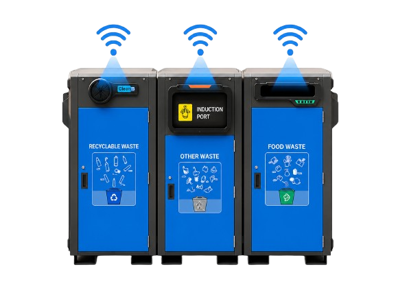

Official Adama City Government Service
Waste Collection
FOR ADAMA CITY
Request collection or report a waste problem to the Adama City sanitation team.
Official Adama City Government Service
Request collection or report a waste problem to the Adama City sanitation team.
Loading live service statistics…
From your report to a collection update, each step has a clear role.
Share the issue, its location, and optional photo evidence through the report form.
Submit a reportThe sanitation team reviews the report and assigns it to a driver for follow-up.
The driver works on the assigned task and updates its status for the team.
Request collectionSensor readings can report fill levels for connected bins; readings may be unavailable when a device is offline or stale.
Location coordinates help the sanitation team and drivers find reported issues and assigned collection tasks.
Report overflowing, damaged, missing, or other problem bins and share details with the sanitation team.
Report an issueAdmins assign work and drivers update task status, helping the team follow each request through its workflow.
Request collectionSubmit a collection request for your location without creating an account.
Your request is reviewed by an administrator before it is assigned for collection.

Report overflowing or damaged bins directly to the sanitation team in seconds.
Contact the sanitation team for help with waste collection services.
Walk through a cleaner, greener and smarter city environment supported by reliable collection services and backed by Adama City Administration.
Every citizen can request collection, report issues, and take part in building a healthier urban future — one smart action at a time.
Request Collection
Take control of your urban environment. Available on iOS and Android.
Reports are not anonymous: the form requests your name, phone number, location, and issue details. Photos are optional. The privacy policy explains how submitted information is used.
Read the Privacy PolicyNo account is required to submit a waste report or collection request.
No. The report form requires your name, phone number, and location. A photo is optional.
The sanitation team reviews the report. An administrator can assign it to a driver, who updates the task as work progresses.
No. Only connected sensors can provide readings, and a reading may be marked stale or unavailable if the device is offline.